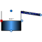

TankWith3InletOutletArraysWithEvaporatorCondensorTank with Heating and Evaporation |

|
Diagram
{kind=link}
Information
This information is part of the Modelica Standard Library maintained by the Modelica Association.
This tank has the same geometric variables as TankWith3InletOutletArrays plus the feature of a HeatPort and the possibility of evaporation. (Assumption: The gas is condensed immediately afterwards so that a liquid boiling fluid is created.)
The tank can be initialized with the following options:
- GuessValues: no explicit initial conditions
- InitialValues: initial values of temperature (or specific enthalpy), composition and level are specified
- SteadyStateHydraulic: initial values of temperature (or specific enthalpy) and composition are specified; the initial level is determined so that levels and pressure are at steady state.
Full steady state initialization is not supported, because the corresponding initial equations for temperature/enthalpy are undetermined (the flow rate through the port at steady state is zero).
Parameters (21)
| crossArea |
Value: Type: Area (m²) Description: Tank area |
|---|---|
| top_pipeArea |
Value: Type: Area[n_TopPorts] (m²) Description: Area of outlet pipe |
| side_pipeArea |
Value: Type: Area[n_SidePorts] (m²) Description: Area of outlet pipe |
| bottom_pipeArea |
Value: Type: Area[n_BottomPorts] (m²) Description: Area of outlet pipe |
| height |
Value: 10 Type: Height (m) Description: Height of Tank |
| V0 |
Value: 0 Type: Volume (m³) Description: Volume of the liquid when the level is zero |
| side_heights |
Value: zeros(n_SidePorts) Type: Height[n_SidePorts] (m) Description: Side heights |
| bottom_heights |
Value: zeros(n_BottomPorts) Type: Height[n_BottomPorts] (m) Description: Bottom heights |
| top_heights |
Value: fill(height, n_TopPorts) Type: Height[n_TopPorts] (m) Description: Top heights |
| level_start |
Value: Type: Height (m) Description: Initial tank level |
| initType |
Value: Init.GuessValues Type: Init Description: Initialization option |
| use_T_start |
Value: true Type: Boolean Description: = true, if T_start is used, otherwise h_start |
| T_start |
Value: if use_T_start then 293.15 else Medium.temperature_phX(p_ambient, h_start, X_start) Type: Temperature (K) Description: Start value of temperature |
| h_start |
Value: if use_T_start then Medium.specificEnthalpy_pTX(p_ambient, T_start, X_start[1:Medium.nXi]) else 1e4 Type: SpecificEnthalpy (J/kg) Description: Start value of specific enthalpy |
| X_start |
Value: Medium.reference_X Type: MassFraction[Medium.nX] (kg/kg) Description: Start value of mass fractions m_i/m |
| p_ambient |
Value: 101325 Type: AbsolutePressure (Pa) Description: Tank surface pressure |
| T_ambient |
Value: 293.15 Type: Temperature (K) Description: Tank surface Temperature |
| n_TopPorts |
Value: 1 Type: Integer Description: Number of Top connectors |
| n_SidePorts |
Value: 1 Type: Integer Description: Number of side connectors |
| n_BottomPorts |
Value: 1 Type: Integer Description: Number of bottom connectors |
| min_level_for_heating |
Value: Type: Height (m) Description: Minimum level for heating |
Connectors (5)
| BottomFluidPort | ||
|---|---|---|
| TopFluidPort |
Type: FluidPort_a[n_TopPorts] |
|
| SideFluidPort |
Type: FluidPort_b[n_SidePorts] |
|
| Condensed |
Type: FluidPort_b |
|
| heatPort |
Type: HeatPort_a |
Components (6)
| medium |
Type: BaseProperties |
|
|---|---|---|
| InnerTankTop |
Type: InnerTank[n_TopPorts] |
|
| InnerTankSide |
Type: InnerTank[n_SidePorts] |
|
| InnerTankBottom |
Type: InnerTank[n_BottomPorts] |
|
| heatTransfer |
Type: HeatTransfer |
|
| sat |
Type: SaturationProperties Description: State vector to compute saturation properties |
Used in Examples (1)
|
Modelica.Fluid.Examples.AST_BatchPlant Model of an experimental batch plant |